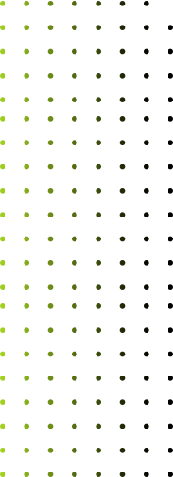
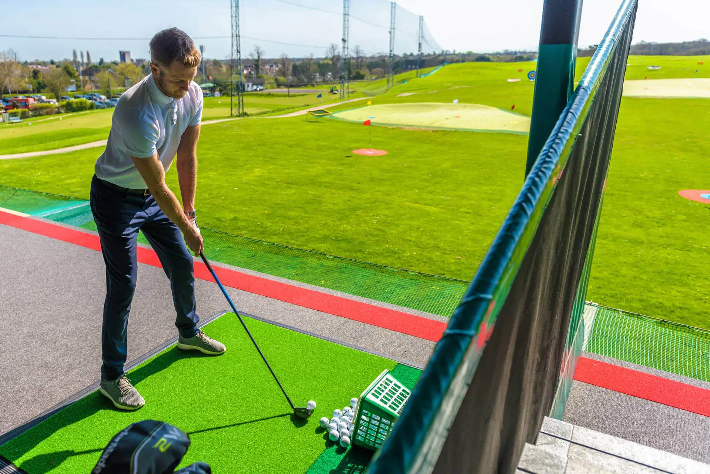
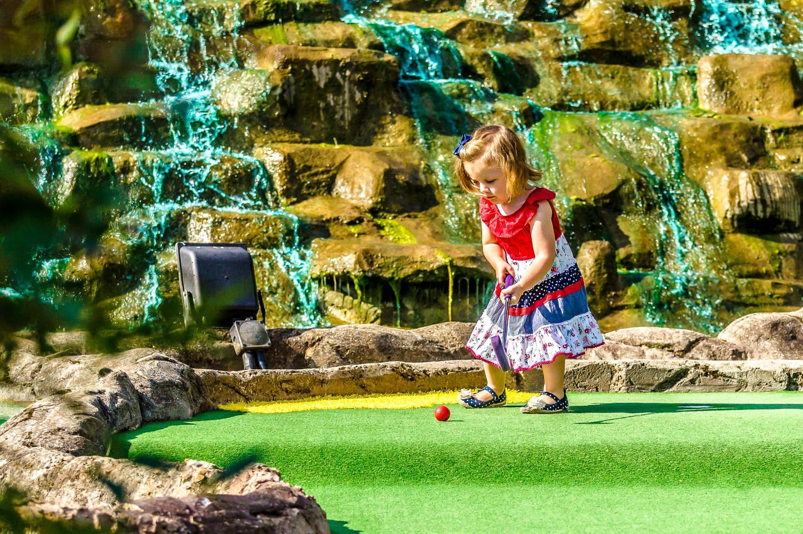

Eat. Drink. Play.
Welcome to Sidcup Family Golf!
Sidcup Family Golf is a Toptracer driving range and crazy golf venue in Sidcup, South East London. Passionate about technology, player development and making golf fun and accessible to everyone.
Toptracer Range
Golf Lessons
Adventure Golf
Café
Events
Toptracer Range
Golf Lessons
Adventure Golf
Café
Events


About Us
Home to a 46-bay, multi-tier, floodlit driving range, powered by Toptracer Range technology. Complimented by a practice green and bunker, coffee shop and American Golf Store. There truly is something for everyone as we also boast two outdoor 18-hole dinosaur themed crazy golf courses.
Please note: we are a cashless venue. The range closes at 10pm with last balls at 9pm.Toptracer Range
Our range delivers the same ball-tracking technology that traces the shots of the game’s best players on TV.
Toptracer Range technology offers a fun, engaging, tech-driven experience that appeals to seasoned players, range rivals, friends, family members, and even first-time golfers.
Toptracer Range
Advanture Golf
Become a Jurassic explorer as you delve into the land of the dinosaurs! Putt your way through prehistoric landscape, cascading waterfalls and meet some dinosaur friends along the way.
Mr Mulligan's
Advanture Golf
Golf lessons
Passionate about player development, whether you are new to the game or an aspiring pro, we offer both group and individual lessons tailored to you with the sole focus of helping you reach your goals.
Golf Lessons

Sign up for Sidcup News and Special
Offers
Straight to Your Inbox

Absolutely loved the experience! The staff looked after me ensured I was enjoying the range and gave me helpful tips to get the best out of my game. Digital screens to see my progress. I’ll be back 😁 🏌🏽♀️

WHAT ARE YOU WAITING FOR?
TopTracer Range

Golf Lessons

Adventure Golf
